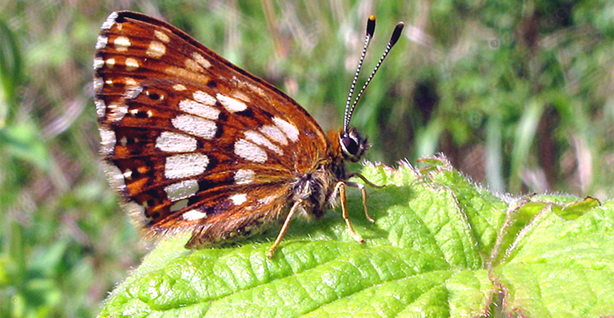

Climate change human link evidence 'stronger'
A review from the UK Met Office says it is becoming clearer that human activities are causing climate change.
It says the evidence is stronger now than when the Intergovernmental Panel on Climate Change carried out its last assessment in 2007.
The analysis, published in the Wiley Interdisciplinary Reviews Climate Change Journal, has assessed 110 research papers on the subject.
It says the Earth is changing rapidly, probably because of greenhouse gases.
In 2007 the IPCC's report concluded that there was "unequivocal" evidence that the Earth was warming and it was likely that it was due to burning of fossil fuels.
Since then the evidence that human activities are responsible for a rise in temperatures has increased, according to this new assessment by Dr Peter Stott and colleagues at the UK Met Office.
The Met Office study comes at a time when some have questioned the entire basis of climate science following recent controversies over the handling of research findings by the IPCC and the Climate Research Unit at the University of East Anglia.
Dr Stott denies that the study has been published as part of a fight back by the climate research community.
"We started writing this paper a year ago. I think it's important to communicate to people what the science is showing and that's why I'm talking about this paper."
'Consistent picture'
The study, which looks at research published since the IPCC's report, has found that changes in Arctic sea ice, atmospheric moisture, saltiness of parts of the Atlantic Ocean and temperature changes in the Antarctic are consistent with human influence on our climate.
"What this study shows is that the evidence has strengthened for human influence on climate and we know that because we've looked at evidence across the climate system and what this shows very clearly is a consistent picture of a warming world," said Dr Stott.
The study brings together other research from a range of disciplines.
"We hadn't [until now] looked in detail at how the climate system was changing," says Dr Stott.
"[Our paper looks at] not just the temperatures but also the reducing Arctic sea ice and it includes changing rainfall patterns and it includes the fact that the atmosphere is getting more humid.
"And all these different aspects of the climate system are adding up to a picture of the effects of a human influence on our climate."
The Met Office study said that it was harder to find a firm link between climate change and individual extreme weather conditions - even though models predicted that extreme events were more likely.
According to the report: "Extremes pose a particular challenge, since rare events are by definition, poorly sampled in the historical record and many challenges remain for robustly attributing regional changes in extreme events such as droughts, floods and hurricanes."